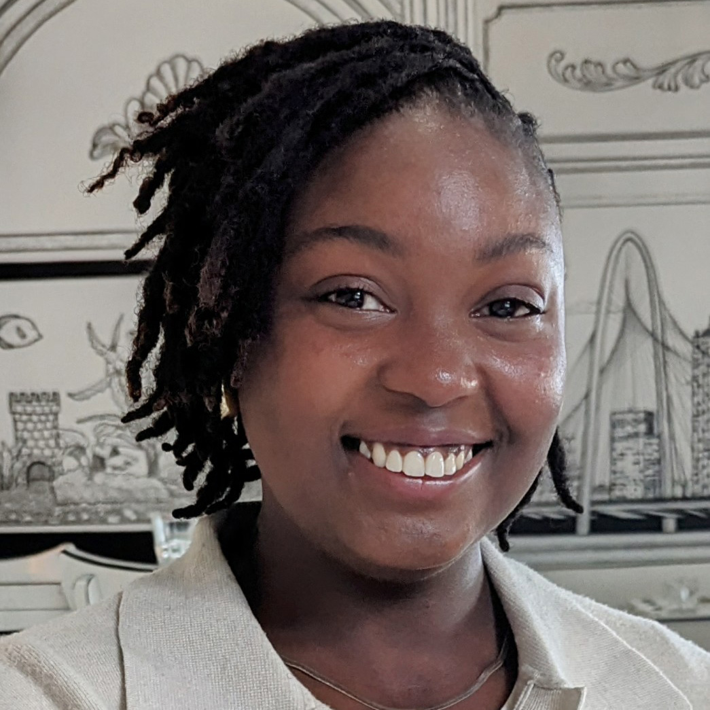
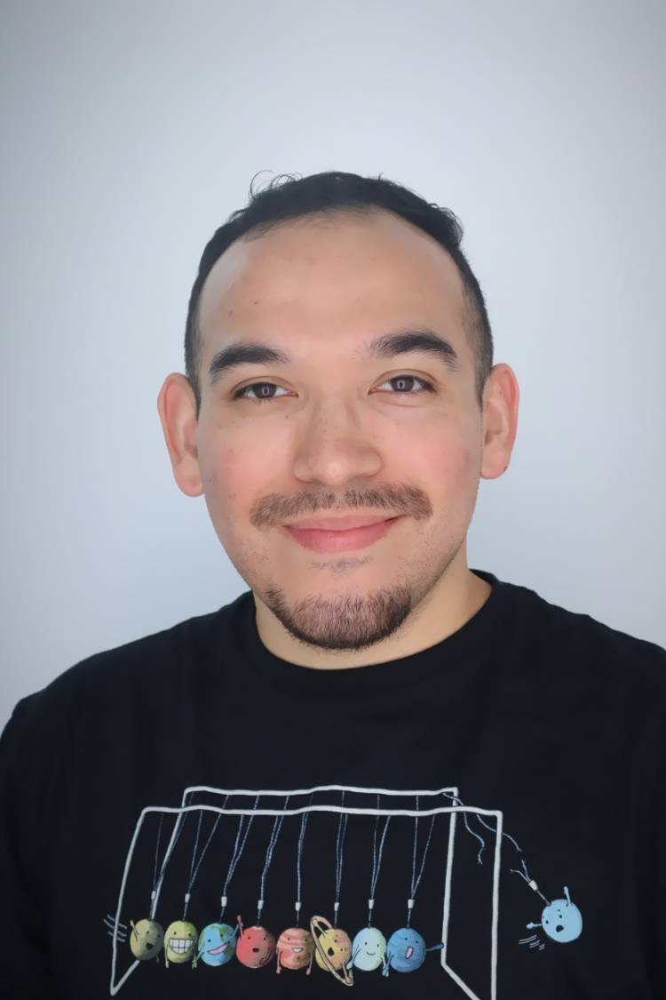

Researchers, planners, and designers working toward equitable, resilient cities.
Ryun Jung Lee is an Assistant Professor of Urban and Regional Planning at the University of Texas at San Antonio (UTSA), a member of the American Institute of Certified Planners, and core faculty of the Center for Urban and Regional Planning Research at UTSA. His research examines the links between built environment, neighborhood change, and quality of life through geospatial analysis and statistical approaches with an emphasis on community resilience and environmental justice. He has published in peer-reviewed journals including Landscape and Urban Planning, Environment and Planning B: Urban Analytics and City Science, and Sustainable Cities and Society.
Graduate research assistant collaborating with Dr. Lee while pursuing a Master's in Urban and Regional Planning, specializing in design. Elliott has a deep passion for urban planning, particularly in the areas of design, sustainability, and transportation, and enjoys utilizing ArcGIS and Adobe Suite to create compelling visuals that effectively communicate data and ideas to diverse audiences.
Master of Science in Urban and Regional Planning candidate at UTSA, specializing in urban design, with an undergraduate degree in B.S. Architecture. Faro focuses on walkability, density, and sustainability in the built environment, and is passionate about designing cities that are livable, inclusive, and human-scaled.
M.S. Urban and Regional Planning, Class of 2024

M.S. Urban and Regional Planning, Class of 2024

M.S. Urban and Regional Planning, Class of 2025